Key Usage Scenarios
Walkthrough: Create evaluation company
About this walkthrough: An evaluation company is to be created, in order to try Latvian Cash Management Localization.
Roles: No specific user roles are required.
Story: You are John Roberts managing director of Cronus International. The company runs business in the sphere of sales of furniture and rendering consultation services related to interior design upon request of local customers. Cronus International is required to carry out transactions with petty cash according to Latvia local requirements. You are assigned to test the settings on an evaluation company before adding the settings into your company.
Availability: can be accessed from Search for Page or Report…
Pre-requisites: No pre-requisites required
Create Evaluation Company
- Click on the button Search for Page or Report... 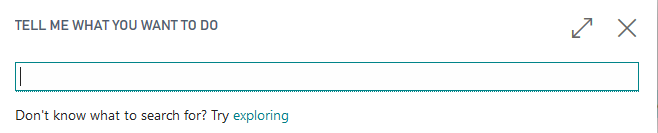
- Type Companies and select Companies from Lists

- Press New, select Create New Company, press Next 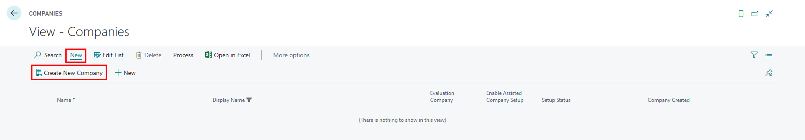
- Enter company name, for example, CASH-EVALUATION; set Evaluation-Sample Data in field Select the Data and Setup to Get Started

- Press Next, Next, Finish
- In My Settings, select your evaluation company 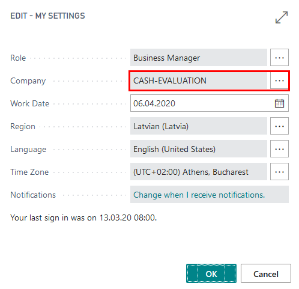
Walkthrough: How to set up Cash Book Journal batches
About this walkthrough: Cash Income Orders and Cash Payment Orders require to have separate Cash Book Journal batches.
Roles: No specific user roles are required.
Story: You are John Roberts managing director of Cronus International. The company runs business in the sphere of sales of furniture and rendering consultation services related to interior design upon request of local customers. Cronus International is required to carry out transactions with petty cash according to Latvia local requirements. You are assigned to create cash book journal separate batches for Cash Income Orders and Cash Payment Orders.
Prerequisite: The following information should be completed:
- Review employee card, who is responsible for Petty Cash
- Review Company Information
- Create New Bank Account Card per each Petty Cash location
Review Employee card
Proceed with following detailed steps:
- Click on the button Search for Page or Report...
- Type Employee and select Employees from Pages and Tasks 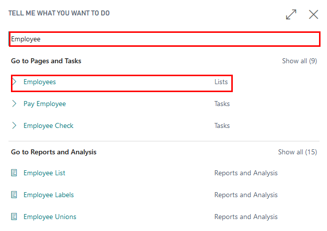
- Open John Roberts employee card who is responsible for petty cash transactions, in order to review that name, surname, title fields are completed 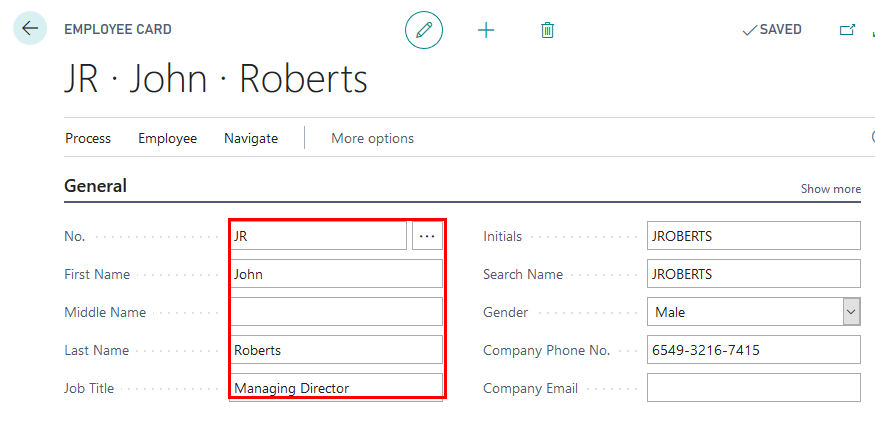
Review Company Information
Click on the button Search for Page or Report...
Type Company Information and select Company Information from Pages and Tasks

Review Company Information is completed:
- Name
- Address -
- Post Code
- Country
- Registration No. - copy the VAT registration number and set it as Registration No.
- VAT Registration No.

Review Bank Account Posting Group for Petty Cash is created
- Click on the button Search for Page or Report...
- Enter Bank Account Posting Groups and then choose the related link.

- Bank account posting group CASH is to be used for petty cash and it has an assigned G/L Account. 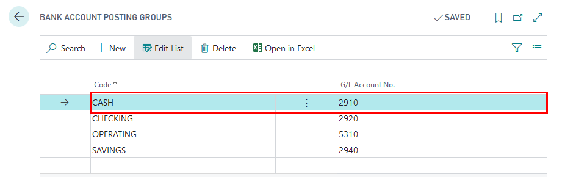
Create New Bank Account Card for Petty Cash and register Cash Income Order and Cash Payment Order, Print Cash Book
- Click on the button Search for Page or Report...
- Type Bank Accounts and select Bank Accounts from Pages and Tasks

- Press New, in order to create New Bank Account card per Petty Cash location

- Complete Bank Account Card information with
- No. - CASH
- Name - Petty Cash Riga
- Bank Account Posting Group - CASH
- Account Type- select Cash Desk
- Cashier No.- select AH
- Accountant No. - select JR 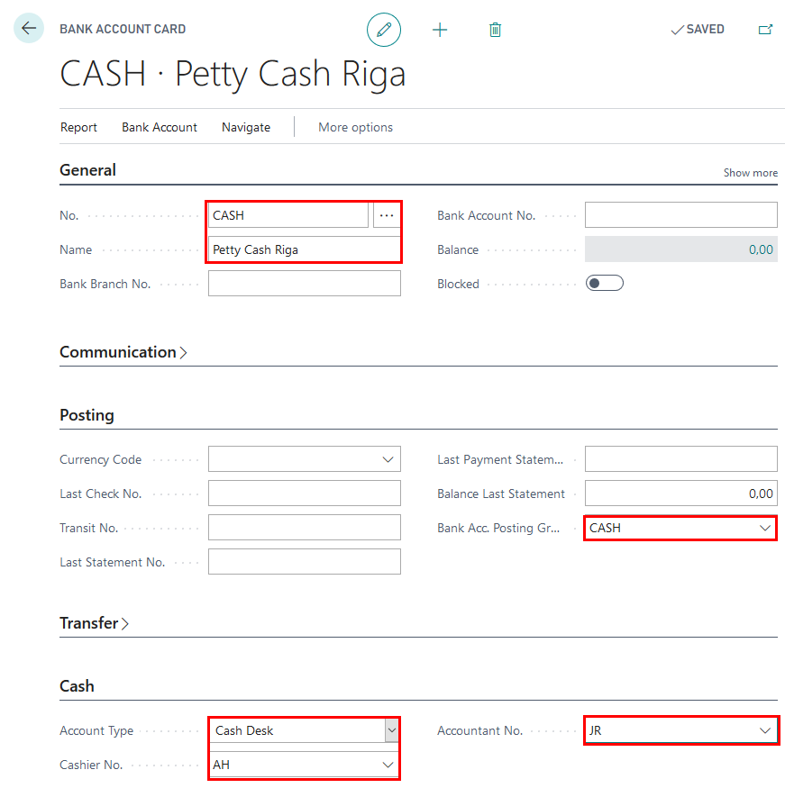
Create New No.Series
- Click on the button Search for Page or Report...
- Type No.Series 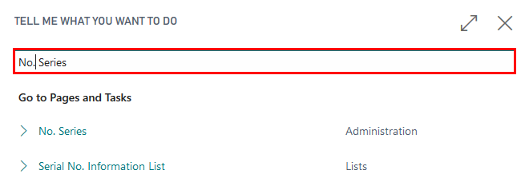
- Press New, in order to create new No. Series 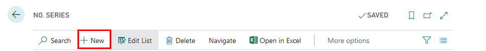
- Complete the fields
- Code - CASH-RCPT
- Description - Cash Receipt
- Default Nos. - insert checkmark
- Select CASH-RCPT, press Lines 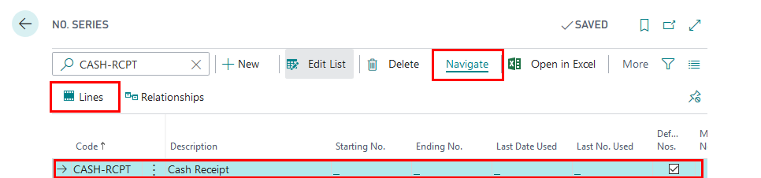
- Complete fields
- Starting No. - enter KIO000001
- Increment By No. - enter 1
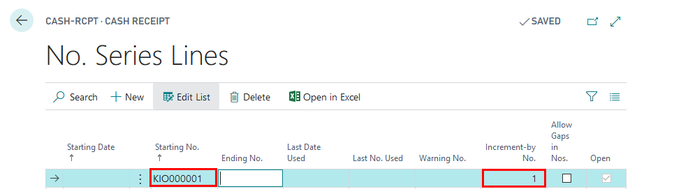
- Press New, in order to create new No. Series
8. Complete the fields - Code - CASH-PMT - Description - Cash Payment - Default Nos. - insert checkmark 9. Select CASH-PMT, press Lines 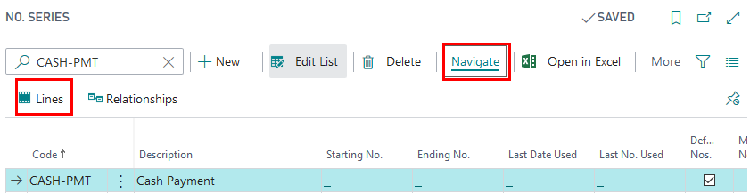 10. Complete fields - Starting No. - enter KZO000001 - Increment By No. - enter 1 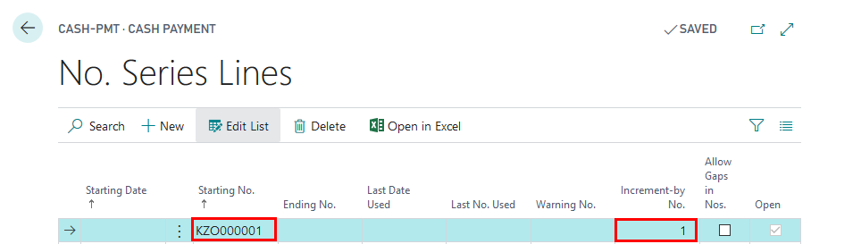
Create New Batches for Cash Book Journals
Click on the button Search for Page or Report...
Type Cash Book Journals and select Cash Book Journals from Tasks 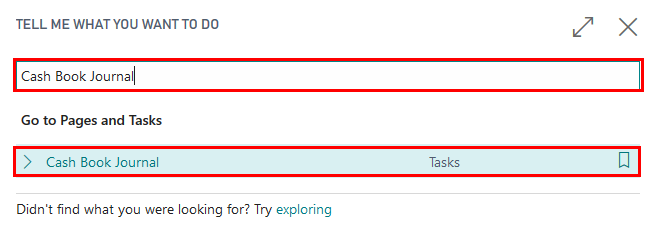
Open Cash Book Journal batches 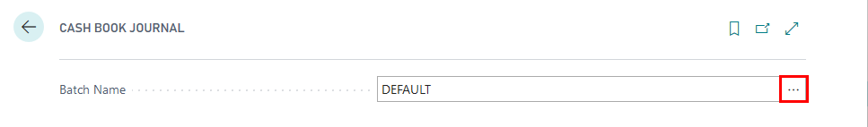
Create New Cash Book Journal Batches for Cash Income Orders (RECEIPT) and create New Cash Book Journal for Cash Payment Orders (PAYMENT)
Complete Name, Description of new Cash Book Journal Batches
- Name - RECEIPT
- Description - Cash Receipts
- Name - PAYMENT
- Description- Cash Payments
Review that Balancing Account Type is set to Bank Account
Set Balancing Account No. to Bank Account used for Petty Cash - CASH
Set No. Series per each Cash Book Journal Batch
- CASH-RCPT for cash income orders
- CASH-PMT for cash payment orders
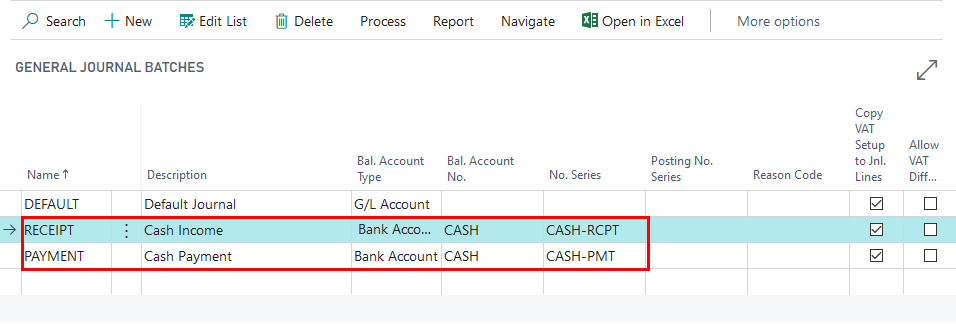
Create Cash Income Order
Click on the button Search for Page or Report...
Type Cash Book Journals and select Cash Book Journals from Tasks
Open Cash Book Journal batches and select RECEIPT 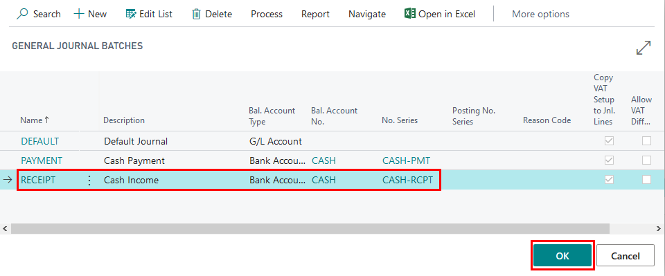
Create Cash Income Order by completing the following fields:
- Posting Date - 06.04.2020
- Document Type - Payment
- Account Type - Customer
- Account No. - 20000
- Description - "Invoice 102169"
- Person Name - Helen Ray
- Person Identity No. - 1134
- Person Identity Doc. No - ID1111
- Amount "-625,50"
- Bal. Account Type - Bank Account
- Bal. Account No.- CASH 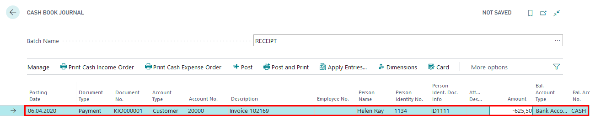
Press Print Cash Income Order in the Ribbon 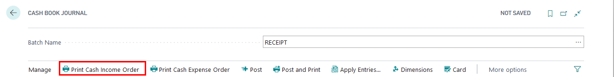
Complete printing options
- Journal Template Name - CASH BOOK
- Journal Batch Name - RECEIPT
- Line No. - 10000
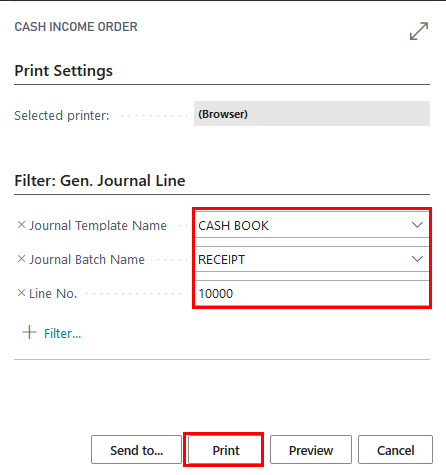 7. Review Cash Income Order Printout
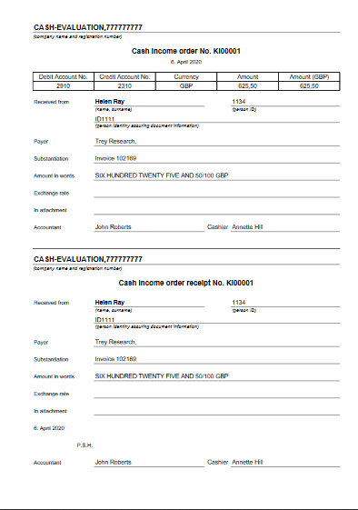
- Press Post, in order to register cash income order 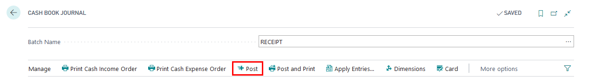
Create Cash Payment Order
- Click on the button Search for Page or Report...
- Type Cash Book Journals and select Cash Book Journals from Tasks
- Open Cash Book Journal batches and select PAYMENT 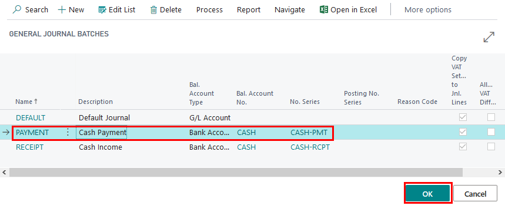
- Create Cash Payment Order by completing the following fields:
- Posting Date - 06.04.2020
- Document Type - Payment
- Account Type - Vendor
- Account No. - 30000
- Description - "Invoice 107204"
- Person Name - Bryce Jasso
- Person Identity No. - 1234
- Person Identity Doc. No - ID2222
- Amount "444,80"
- Bal. Account Type - Bank Account
- Bal. Account No.- CASH 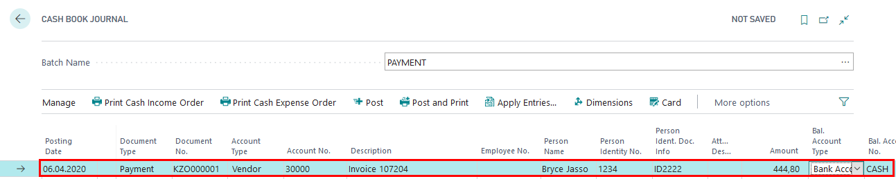
- Press Print Cash Payment Order in the Ribbon
- Complete printing options
- Journal Template Name - CASH BOOK
- Journal Batch Name - PAYMENT
- Line No. - 10000
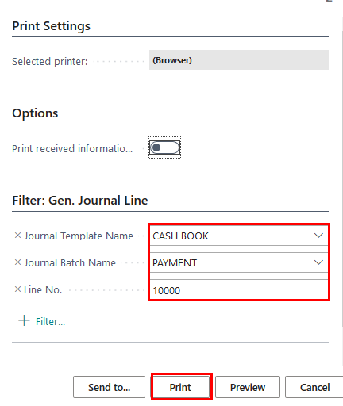
- Review Cash Payment Order Printout
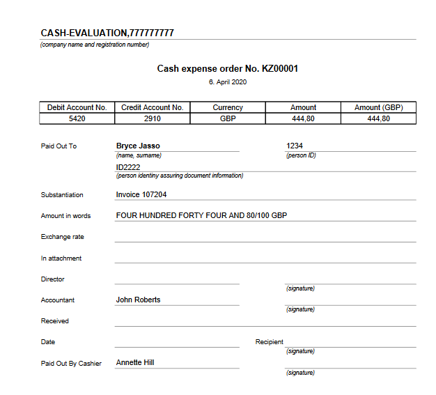 8. Press Post, in order to register cash payment order 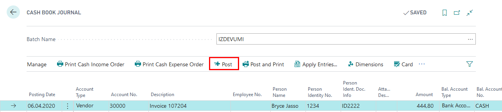
Print Cash Book report
- Click on the button Search for Page or Report...
- Type Cash Book and select Cash Book from Reports and Analysis 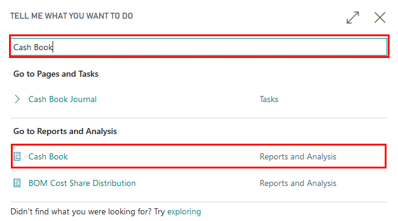
- Set the following printout option
- Report No. - "06.04.2020"
- Bank No. - "CASH"
- Date filter - "06.04.2020" 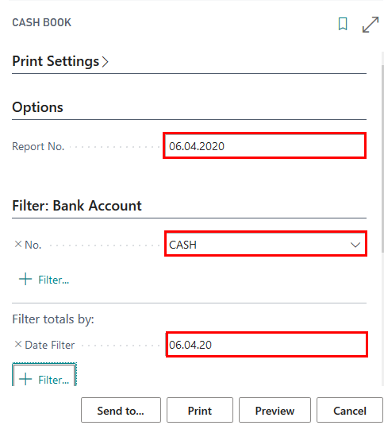 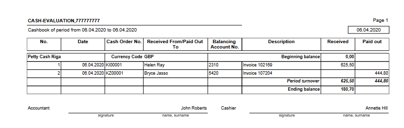